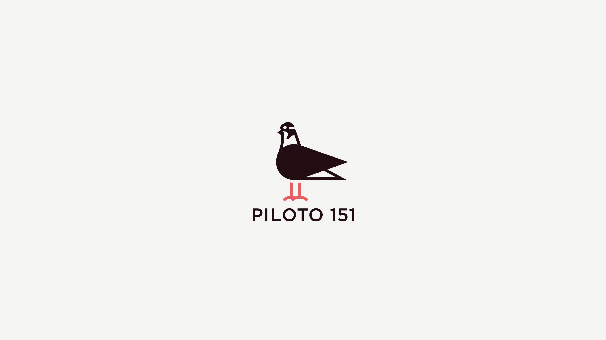

Piloto 151
Piloto 151 is a co-working space and growth platform for entrepreneurs in Puerto Rico. It offers both virtual and physical office spaces designed to foster work, collaboration, and innovation within a community that drives the development of the local creative and technological ecosystem.
The brand needed to allude to its context and reflect its pioneering spirit. “La Paloma" was adopted as the main symbol, an emblem of local origin, and juxtaposed with the language of the aviator, evoking the idea that projects can start and take off from these spaces. The outcome was a comprehensive visual system, encompassing the logo, color palette, typography, way-finding and signage, consolidating a coherent and recognizable identity.
